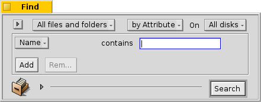

| Index |
|
The Find window Basic queries - "by Name" Advanced queries - "by Attribute" Even more advanced queries - "by Formula" The result window |
A query is a file search based on file attributes and can be performed within Tracker or in Terminal. Queries are saved in /boot/home/queries/ and by default last seven days before being purged. Note, these aren't static result lists of your search, but are the query formulas which trigger a new search whenever you open them.
Even better, you don't have to double-click to re-do a query. You can drill down a saved query just like any folder by right-clicking on it and navigating through the submenus.
The Find window
You start a query by invoking the menu either from the Deskbar menu or any Tracker window or the Desktop (which is actually a fullscreen Tracker window). The shortcut is ALT F. You're presented with the Find window:

Select previous or saved queries or save the current query.
Narrow down your search from "All files and folders" to specific file types.
- Define the search method:
- - a basic search by filename
- - an advanced search, you specify search terms for one or more attributes
- - an even more advanced search, you can fine-tune a complex query term
Select which drives to search on.
Enter the search term.
The expander hides/unhides the additional options.
Uncheck the checkbox if you don't want this query self-destruct after 7 days.
Check if your query is supposed to .
Optionally, enter a name for this query if you want to save it.
You can drag&drop the icon to save the query.
Basic queries - "by Name"
If you simply want to find all files on your mounted disks that match a certain pattern, simply leave the search method at "", enter the search term into the text box and press ENTER.
Advanced queries - "by Attribute"
You can create more advanced queries by searching within the attributes of specific file types. For that to work, these attributes have to be indexed.
You start by setting the filetype from "" to "" and change the search method to "".
This adds a drop-down menu to the left of the textbox and the buttons " and under that. From the menu you choose which attribute to query. With and you can query additional attributes or remove them again. These attributes can be logically linked with AND/OR.
Let's do an email query as an example:

This is your Find window when you're looking for all emails Clara Botters has sent to you in the last two months that had in the subject "vibraphone" or "skepticality".
Even more advanced queries - "by Formula"
Typing in a formula query by hand is daunting and really quite unpractical. It still has its uses.
Take the above query by attribute of Clara's mails concerning vibraphones etc. If you have all the attributes and their search terms set, try switching to "" mode and be overwhelmed by this one line query string:

Once more as text, edited for readability:
(((((MAIL:from=="*[cC][lL][aA][rR][aA] [bB][oO][tT][tT][eE][rR][sS]*")
&&(MAIL:when>=%2 months%))
&&(MAIL:subject=="*[vV][iI][bB][rR][aA][pP][hH][oO][nN][eE]*"))
||(MAIL:subject=="*[sS][kK][eE][pP][tT][iI][cC][aA][lL][iI][tT][yY]*"))
&&(BEOS:TYPE=="text/x-email"))
What's the use?
You could copy and paste the string into an email, forum or IRC for others to use or debug.
You can use this method to construct a query in mode and then switch to mode, to comfortably generate a search string to use for a query in Terminal or a script.
You can fine tune your query by inserting parenthesis where needed, make parts case-sensitive or negate logical combinations by changing. e.g. "==" to "!=" for a NOT AND. All you need is a basic understanding of regular expressions and maybe some scripting basics.
The result window
After you start a search, the Find window will be replaced by a result window. Here is an example that queried for "server":

Besides the gray background, result windows work exactly like any other Tracker window. Some things are worth noting:
You can open the folder a file resides in by double clicking on its path attribute.
With or ALT G you get back to your Find window to refine your query.
A query is live, i.e. if a file that matches your search criteria appears or disappears from your system, this change is reflected in your results in real-time.
You can assign a sensible attribute layout for query results of a specific filetype. Open a folder containing files of the filetype you'd like to create a template for and arrange the attributes how you'd like to have query results presented. Copy this layout with .
Open /boot/home/config/settings/Tracker/DefaultQueryTemplates, create a new folder and rename it to group/filetype, replacing slashes with underscores, e.g."audio_x-mp3". Open the new folder and paste in the layout with .